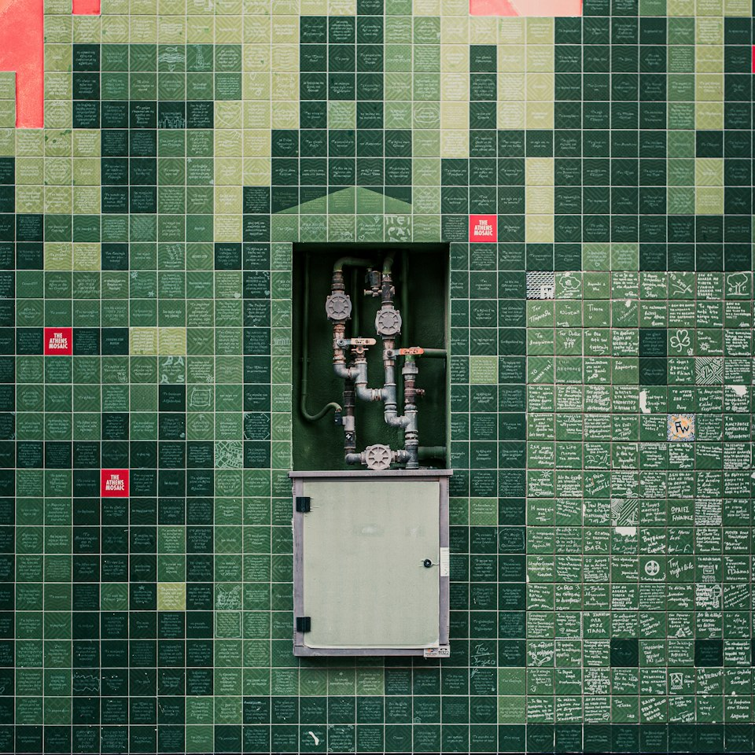

Rooms shaped by the light they are given.
Lintel is a small architecture and interiors practice. We take on houses, small public rooms and places of work, and we stay with each one from the first sketch to the last fitting.

01
Projects


The projects are illustrative concept studies, not built or commissioned work. Replace them with your own projects before publishing.
02
Studio
A small practice, drawn by hand
A building should be simple to describe and generous to live in.
Lintel is a small practice. The people who draw the first plan are the same people who answer the builder's questions, so the idea survives the details.
We work with houses, small cultural rooms and places of work. Each begins with a walk of the site, a conversation about how the days will run, and a plan drawn by hand before anything is modelled.
How we work
03
Materials
Surfaces we return to
